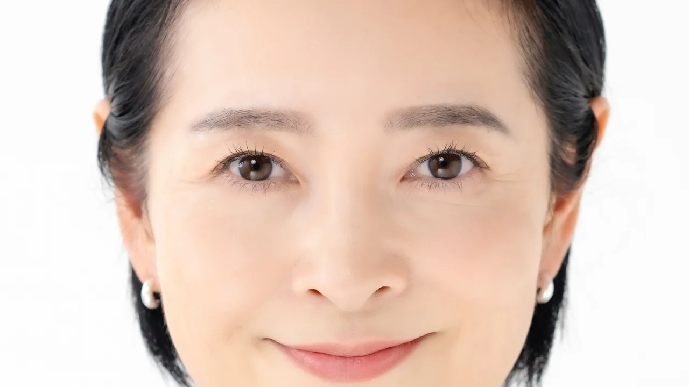
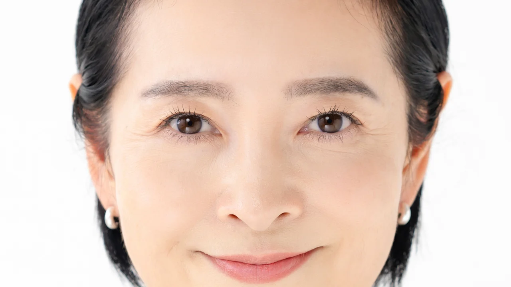
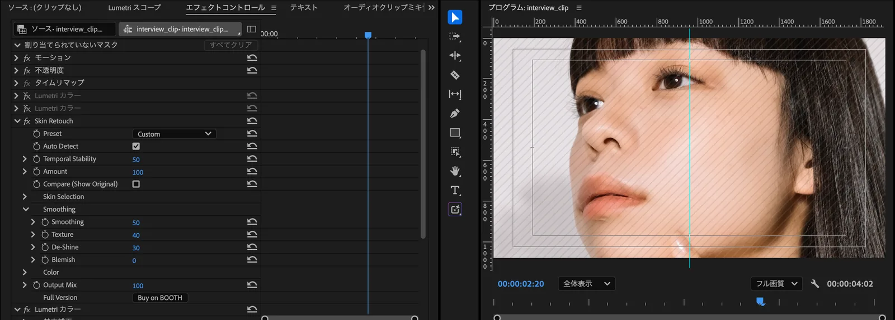

Totonoe Skin Retouch: skin retouch plugin for Premiere Pro and After Effects
Apply it, and skin
evens out naturally
It detects skin color automatically and evens out roughness, redness and shine while keeping edges and texture (pores and fine skin detail). Just apply the effect and the default setting (Standard) is already working.
Not a subscription: you pay once and keep using it. Payment is in Japanese yen on BOOTH, and your card company converts the amount. The free trial has every feature of the full version and adds faint diagonal stripes (a watermark) to the video.


BEFORE AFTERDrag left or right to compare Before and After of the same photo. With a keyboard, use the arrow keys.
ABOUT
What is Totonoe Skin Retouch?
Totonoe Skin Retouch is a skin retouch plugin for Premiere Pro and After Effects. It detects skin color in the video automatically and evens out roughness, redness, shine and uneven color while keeping edges and texture. You only apply the effect, so you do not have to reselect the skin area for each cut.
| Type | Skin retouch (beauty) effect plugin |
|---|---|
| Host apps | Adobe Premiere Pro, After Effects (2025 or later) |
| OS | macOS 13 or later, Windows 10 / 11 (64-bit) |
| What it adjusts | Skin roughness, redness, shine, small blemishes and acne, uneven color, skin tone |
| Price | One-time purchase (not a subscription). Free trial available |
| Sold on | BOOTH (totonoe-plugin). Payment is in Japanese yen and accepts international cards |
Skin retouch plugins for Premiere Pro and After Effects compared
| Product | License | Price | Adobe hosts |
|---|---|---|---|
| Totonoe Skin Retouch | One-time purchase | ¥9,800 (about US$65) | Premiere Pro, After Effects |
| Beauty Box Video (Digital Anarchy) | See vendor site | $199 (one host app) | Premiere Pro, After Effects |
| Portraiture Video (Imagenomic) | One-time purchase | $249.95 (Premiere Pro / After Effects version) | Premiere Pro, After Effects |
| Retouch4me Dodge & Burn (Retouch4me) | One-time purchase | See vendor site | Premiere Pro |
| Skinworks foundation (digital bigmo) | Annual subscription | See vendor site | Premiere Pro, After Effects |
| Magic Bullet Cosmo II (Maxon Red Giant) | Not sold separately. Included in a Red Giant subscription | See vendor site | Premiere Pro, After Effects |
| Continuum Beauty Studio (Boris FX) | Not sold separately. Included in Continuum | See vendor site | Premiere Pro, After Effects |
Prices checked on Nov 7, 2026 from official sites. We have not tested competitor products. "See vendor site" means we could not confirm a current price on the vendor's official page, so check the vendor for the latest price and license terms. The author of this page develops Totonoe Skin Retouch.
DEMO
Demo video (44 seconds)
The video loads only when you press play.
FIRST IMPRESSION
Even skin tone with the default setting
Auto Detect and the Standard preset are on from the start. As soon as you apply the effect to a clip, only the skin is processed. You only need to touch the parameters when you want to adjust the look.
- Detects skin color automatically and processes only the detected area
- Edge-preserving smoothing with texture restoration avoids a painted-over look
- Developed by an editor who uses it on music videos, interviews and commercials

HOW TO USE
Three steps
The steps are the same in Premiere Pro and After Effects.
-
Apply the effect
Apply the "Skin Retouch" effect to a clip.
-
Choose a preset
Pick one of three: Natural, Standard or Strong. If you are not sure, start with Standard.
-
Adjust the strength with Amount
Use the Amount slider to set the overall strength.

FEATURES
Features
Processes only the skin
It detects skin color automatically and applies the effect only to the detected area. You can check the area with Show Mask. Edge-preserving smoothing keeps the outline of the face, eyebrows and eyelashes from blurring.
Works in both Premiere Pro and After Effects
One plugin works in either host. It supports Premiere Pro and After Effects 2025 or later.
One-time purchase
There are no monthly or yearly fees. Bug fixes and compatibility updates within the same major version come at no extra cost.
QUALITY
Details
These images show before and after side by side, using the plugin's output as it is. Each photo was reduced to 1920 px wide, processed with the default setting (Standard), and cropped to part of the face. Click or tap an image to open it at full size.
PRESETS
Choose a preset, then fine-tune with Amount
There are three presets. The comparison on the right shows how they differ.
- Natural: a light touch that keeps texture
- Standard: the default
- Strong: a firmer retouch
With any preset, Amount changes the overall strength. Compare lets you check your work against the original.

PARAMETERS
Main parameters
You can start with just Preset and Amount. Use the parameters below when you want finer control.
- Preset
- Choose Natural, Standard or Strong.
- Amount
- Adjusts the overall strength of the effect.
- Compare
- When on, shows the video before processing. Switch it on and off to compare.
- Output Mix
- Sets how much of the processed video is mixed with the original.
- Temporal Stability
- Reduces flicker caused by the detected skin area changing from frame to frame.
- Auto Detect
- Detects skin color automatically. It is on by default.
- Smoothing
- Evens out skin roughness while keeping edges.
- Texture
- Sets how much of the pores and fine skin detail lost in smoothing is restored.
- De-Shine
- Reduces shine on the skin.
- Blemish
- Makes small blemishes and acne less noticeable.
- Redness / Paleness
- Redness raises or lowers skin redness. Paleness moves skin toward lighter or more tanned.
- Show Mask
- Shows the area detected as skin. Use it when adjusting Hue Range and similar settings.
Good to know before you use it
- Large moles over 7 px in diameter are not removed. This is by design, to protect eyebrows and eyelashes.
- Convert log footage to Rec.709 before applying the effect.
- Skin detection is based on skin color, so a background with a skin-like color may also be detected. If that happens, narrow Hue Range.
SYSTEM REQUIREMENTS
System requirements
Mac
- OS
- macOS 13 or later
- CPU
- Apple Silicon / Intel (Universal Binary)
- GPU
- Processed on a Metal-compatible GPU
Windows
- OS
- Windows 10 / 11 (64-bit)
- Processing
- CPU only. It does not use the GPU, so it is slower than the Mac version.
A free Windows beta is available until November 15, 2026. Get it from the beta page on BOOTH. The official Windows version will be released on November 16, 2026.
The official Windows version is available. It is included in the full version product, so one purchase covers both Mac and Windows. If you already bought the Mac version, you can download the Windows version from your BOOTH library at no extra cost.
Host apps: Premiere Pro / After Effects 2025 or later.
Bit depth: After Effects supports 8-bit, 16-bit and 32-bit float. Premiere Pro supports 8-bit and 32-bit float.
PRICING
Price
Totonoe Skin Retouch, full version
One-time purchase (not a subscription). Payment is in Japanese yen on BOOTH, and your card company converts the amount.
- Bug fixes and compatibility updates within the same major version are free
- One license is for one user, who can install it on their own multiple computers
- Works in both Premiere Pro and After Effects
This is a download product on BOOTH, so purchases cannot be refunded except when the product is defective. Please test it with the free trial before you buy. The trial has every feature of the full version and adds faint diagonal stripes to the video.
GET IT
Where to get it
All downloads are on BOOTH, a Japanese marketplace that also has an English interface.
FAQ
Frequently asked questions
Does Premiere Pro have a built-in skin retouching effect?
Premiere Pro has no effect made for skin retouching. With the built-in tools, you select skin using HSL Secondary in Lumetri Color and adjust it. You have to reselect the skin whenever the shot or lighting changes, so a skin retouch plugin can save time on projects with many cuts. A step-by-step guide to the built-in method is in the article How to Retouch Skin in Premiere Pro.
How does Totonoe Skin Retouch differ from Beauty Box?
Both plugins detect skin by color and retouch it. Totonoe Skin Retouch works with Premiere Pro and After Effects and is a one-time purchase of ¥9,800 (about US$65). Digital Anarchy's store lists Beauty Box Video 6.0 at $199 for one host app (checked November 8, 2026), and it also has versions for DaVinci Resolve, Final Cut Pro and Avid. A detailed comparison is in the article Beauty Box Alternative for Premiere Pro and After Effects.
How does it differ from Skinworks?
Totonoe Skin Retouch is a one-time purchase of ¥9,800 (about US$65), and one effect adjusts skin smoothness, shine, small blemishes and redness. Skinworks for Adobe is an annual subscription, split into foundation (evens out skin tone), concealer (removes acne and moles) and gloss (emphasizes highlights). It also has versions for DaVinci Resolve and Nuke. See digital bigmo's site for current prices.
Why is it cheaper than other skin retouch plugins?
Because it has fewer features and supports fewer hosts. It is a single skin retouch effect, with no face detection, no AI-based masking, and no tools for brightening teeth or the whites of the eyes. It supports only Premiere Pro and After Effects. It is developed by one person and sold directly on BOOTH. If you need to retouch each person separately in a shot with several people, or want to use DaVinci Resolve or Final Cut Pro, another product may suit you better.
How do I choose a skin retouch plugin?
First check that it supports your editing software. Then narrow the list by one-time purchase versus subscription, and by budget. Most products have a trial, so the most reliable last step is to test them on your own footage.
Is it a subscription?
No, it is a one-time purchase. There are no monthly or yearly fees. Bug fixes and compatibility updates within the same major version are free.
Does it work on Windows?
It works on Windows 10 and 11 (64-bit). A free beta is available until November 15, 2026. On November 16, the official Windows version will be added to the full version product on BOOTH. One purchase covers both Mac and Windows. If you already bought the Mac version, you can download the Windows version from your BOOTH library at no extra cost.
The Windows version runs on the CPU only, so it is slower than the Mac version. See System requirements for details.
Does it work in DaVinci Resolve?
Not at the moment. The supported hosts are Premiere Pro and After Effects 2025 or later.
Can I try it before buying?
Yes. A free trial is available on BOOTH. It has every feature of the full version, and it adds faint diagonal stripes (a watermark) to the video. Because this is a download product, purchases cannot be refunded except when the product is defective, so please test it on your own footage with the free trial first.
Does it work offline?
Yes. Once installed, it works without an internet connection. All processing happens on your computer, and your footage is never sent to an external server. The plugin does not connect to the internet, and the license is checked locally. A browser opens only when you click the User Guide or Buy on BOOTH button in the effect.
What happens when there are several people in the shot?
The effect is applied to everyone with a similar skin tone. To apply it to only one person, combine it with a mask in Premiere Pro or After Effects.
The background or clothing is being processed too.
Skin is detected by color, so a background or prop with a skin-like color can be picked up. Check the detected area with Show Mask and narrow Hue Range.
Does it work with log footage?
Convert log footage to Rec.709 before applying the effect.
Can I open saved projects after updating?
Yes. Parameter identifiers stay fixed across versions, so saved projects keep each parameter's value.
How do I contact support?
Send a message through BOOTH. You can write in English or Japanese.
Try it on your own footage first
The free trial has every feature of the full version. You can apply the effect, choose a preset and adjust Amount, all before you buy.